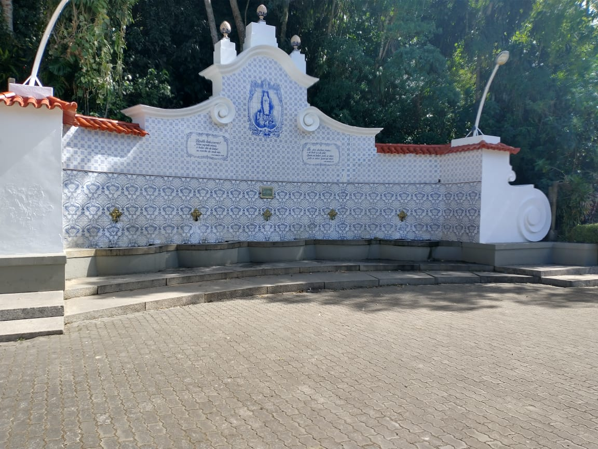
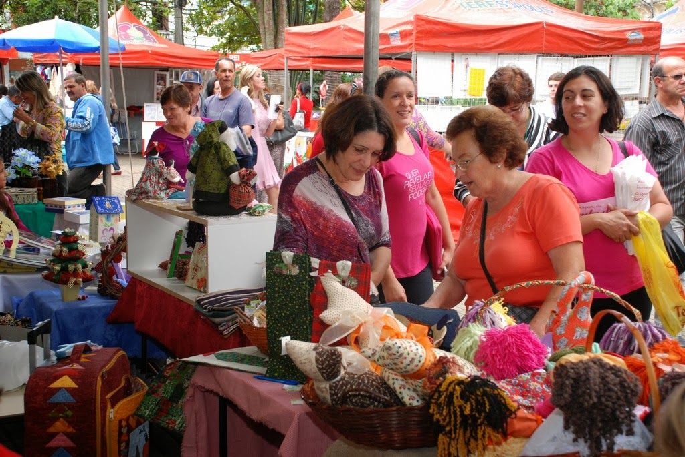

Fonte Judith, um local refrescante para
matar sua sede em um dia de verão
-
- 1920
- Sua data de construção
-
- Arquitetura colonial
- Estilo muito ultilizado na época colonial
-
- Água natural
- Sua àgua que sai da fonte é totalmente própria
para consumo
-
- Manoel Guedes da Costa
- Autor e fundador
- Mais detalhes

Parque nacional da serra dos orgãos.
Desfrute da natureza com belíssimas paisagens
incluindo nosso famoso DEDO DE DEUS
-
- 1939
- Data de criação
-
- Época
- Terceiro parque mais antigo do Brasil
-
- Esportes
- Esportes de montanha são muito comuns na área
-
- Novas especies encontradas
- Mais de 2.800 espécies de plantas
catalogadas pela ciência
- Mais detalhes

Feiras de Arte, aqui você encontra de tudo...
e mais um pouco!
-
- 1973
- Data de criação
-
- Pluralidade
- Mais de 600 estandes
-
- No topo
- A maior feira de artesanato do Brasil
-
- Para todos
- Praça de alimentação e eventos
- Mais detalhes